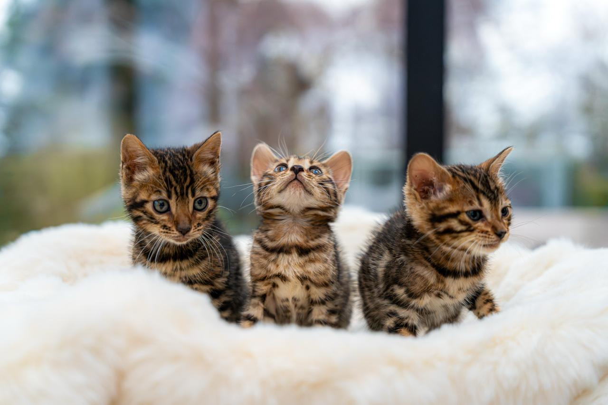

Nilimistica
Bengalen cattery
Met liefde grootgebracht, met zorg geselecteerd
Waar elegantie en karakter samenkomen.
Bij Nilimistica groeien onze bengalen op met veel aandacht voor gezondheid, socialisatie en hun speelse, nieuwsgierige aard. Van warme bruine bengalen tot verfijnde zilveren bengalen: iedere kleurvariant krijgt hier dezelfde liefdevolle en stijlvolle start.

Beschikbaar nest
Voorjaar 2026 Reserveer vroegtijdig een plekje op onze interesselijst.Over ons
Warm, stijlvol en toegewijd aan het bengaal ras.
Onze visie
Wij geloven dat een goede start alles bepaalt. Daarom combineren we aandacht voor rasstandaard met een rustige, liefdevolle omgeving waarin kittens zelfvertrouwen opbouwen.
Onze bengalen
Bengalen staan bekend om hun atletische bouw, zijdezachte vacht en levendige karakter. Of het nu gaat om rijk warm bruin of helder zilver met contrastvolle tekening, we selecteren op gezondheid, schoonheid en een sociaal temperament.
"Een kitten kiezen is niet alleen verliefd worden op uiterlijk, maar ook op karakter en vertrouwen."
Kittens
Een zachte start voor kleine ontdekkingsreizigers.

Nestjes
Kleinschalig, sociaal en vol karakter
Onze kittens groeien op in een warme omgeving, waar ze dagelijks wennen aan mensen, geluiden en contact. Zo krijgen ze een zelfverzekerde en liefdevolle start.
Interesselijst
Zoek je een bengaal kitten en wil je op de hoogte blijven van komende nestjes? Meld je aan voor onze interesselijst.
Opgegroeid in huis
Onze kittens wennen aan dagelijkse geluiden, aanraking en spel, zodat ze met vertrouwen naar hun nieuwe thuis verhuizen.
Klaar voor vertrek
Kittens vertrekken met leeftijdsadequate zorg, duidelijke informatie en alles wat nodig is voor een fijne overgang.
Werkwijze
Rustig, persoonlijk en transparant van eerste bericht tot verhuizing.
Kennismaking
We horen graag meer over jouw thuissituatie en wensen, zodat we kunnen kijken of een bengaal goed bij je past.
Interesselijst of reservering
Bij een passend nest nemen we contact op en bespreken we karakter, verwachtingen en de beste match.
Begeleiding naar huis
Ook na het ophalen blijven we bereikbaar voor vragen over voeding, gedrag en de verdere ontwikkeling van je kitten.
Contact
Nieuwsgierig naar onze cattery of een toekomstig nestje?
Stuur gerust een bericht voor meer informatie, beschikbaarheid of een eerste kennismaking.